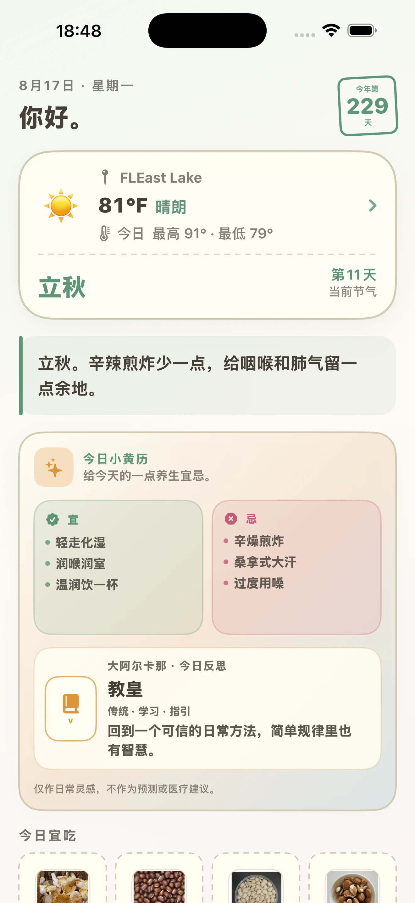
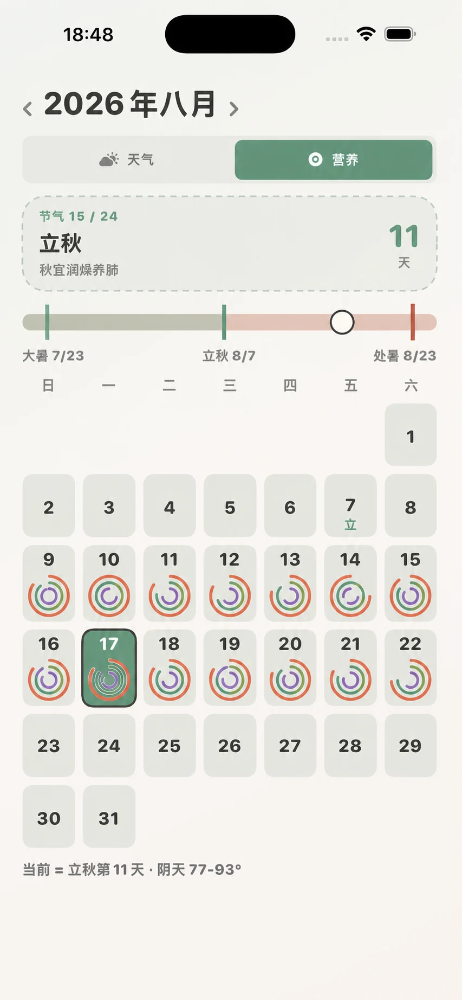
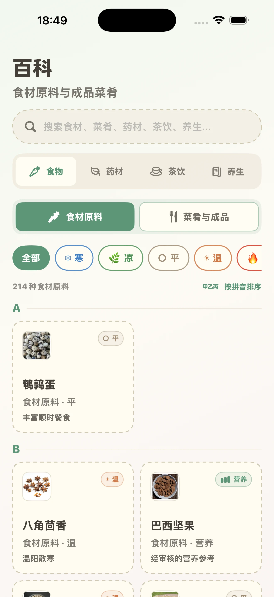

01
顺时而食
- 天气与二十四节气
- 每日食养参考

现已上线 · App Store
食养日历 · NOURISHDAY
一张照片，变成可复核的营养记录、饮食日历和更清晰的日常节奏。

一餐，三个时刻
会变化的 14 天视图
示意数据 · 8 月 4–17 日
应用内体验



简单清晰
免费
适合日常记录
可选 PREMIUM
适合深入了解营养趋势
始终由你掌控
快速解答
食养日历现已在 App Store 上线，可通过本页的固定下载链接直接打开。新应用上线后，App Store 关键词搜索的收录与排序可能需要一些时间。
有。免费方案包含五个核心标签、每天三次图片分析，以及最近七天的营养历史。
不是。识别、营养和节气食养内容只用于教育与一般健康参考，不用于诊断或治疗。
现已上线 APP STORE